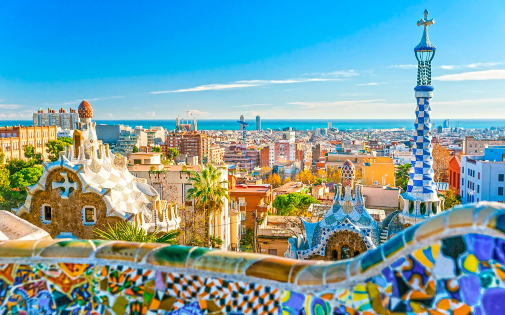
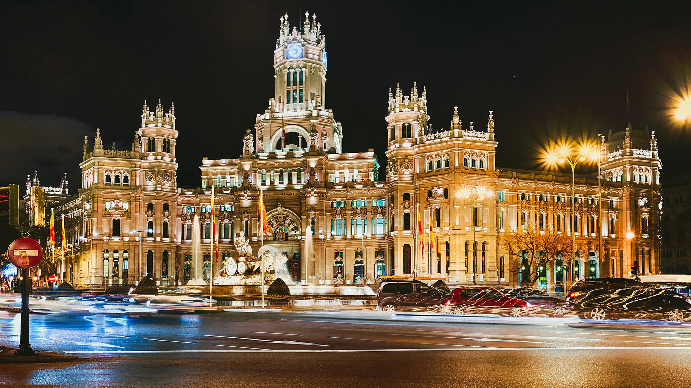
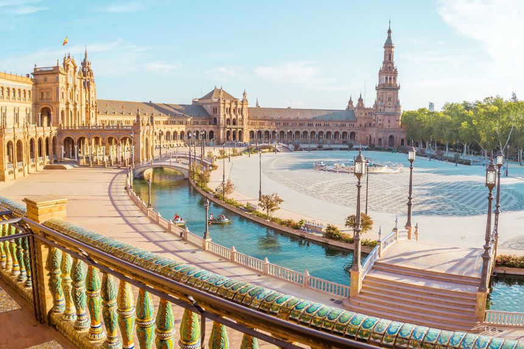

Présentation
Politique
Tourisme
formulaire
Barcelone

La Sagrada Familia
Le parc Güell
La Casa Milà et la Casa Batlló, 2 immeubles dessinés par Gaudí
Le quartier gothique
La Rambla, avenue emblématique de Barcelone
La colline de Montjuïc, où se trouve le jardin botanique de Barcelone
ainsi que les installations olympiques des JO de 1992.
Le Camp Nou, stade mythique du FC Barcelone
Go Madrid
Lieux a visiter a la capital:Madrid

Le Palais de Cybèle, pour son architecture magnifique
La Plaza Mayor de Madrid
Le Palais Royal de Madrid
Le musée du Prado
Le sublime parc du Retiro, un des mieux aménagé d’Europe!
GO Séville
Lieux a visitera Séville

La Place d’Espagne
La cathédrale de Séville et la Giralda
L’Alcazar de Séville, merveille d’architecture, ainsi que ses jardins.
Les arènes de la Real Maestranza de Caballería de Séville
La Tour de l’Or (Torre del Oro), au bord du canal Alphonse-XIII